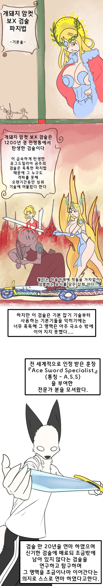
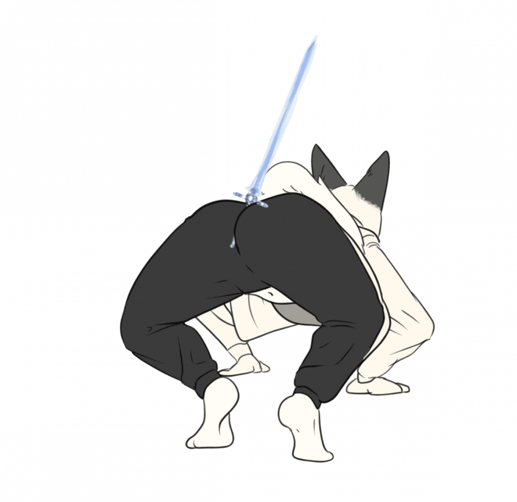
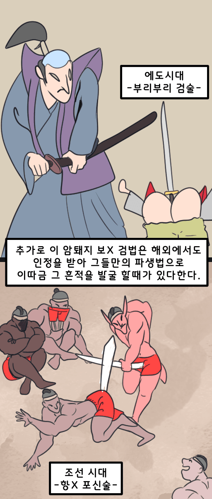

나만 볼 수 없다
다같이 알아보자!

<기본 파지법>

기술을 익히기 이전의
기본 잡기이다
유그드밀리아 제 1공주의 검술로
이 잡기 기술부터 탄탄히 배워두어야 이후에
나올 기술들을 유연히 사용할수 있게 될것이다.
제 1단 기본 필살 -파워 스메쉬[Power smash]-이다+.
대두근에 온힘을 집중하고 골반과 다리근육으로
검의 무게와 흐름을 컨트롤 하는것이 중요하다
1:1 대면상황에서의 필승이 높은 기술이다.
은근히 난이도가 높은 기술이므로
기본기를 탄탄히 익히는것이 좋다.
<기본 기술>
기초적인 기본 기술인 내려찍기이다.
기본 잡기 기술을 익혔다면 제일 먼저
익혀두는 기술일것이다
단순하게 대둔근과 괄약근의 힘만으로
상대를 내려치는 기술이므로
그리 크게 어렵지 않을 것이다.
내려찍기 다음으로 배울 기술일것이다.
횡베기는 엉덩이 힘 말고도 골반을 움직이는
컨트롤 까지 겸해 있어
난이도가 조금 올라가 있는 기술이다.
기본 기술인 당겨베기[Scythe Cutting]
기본 자세가 낮은 포복이므로
골반을 가슴 아래로 낮춘뒤 재빠르게 상대방의
발목을 베어버리는 기술이다.
적의 모든 움직임을 봉하는 기술이므로
매우 치명적이다.
기본 기술인 찌르기[Armor Piercing]
골반을 높게 들어 한순간의
대둔근 , 괄약근의 힘을 극한으로
끌어모아 단숨에 내려 찍는 기술이다.
적들의 갑옷을 한순간에 종이 짝 처럼 뚫는것이 특징이다.
이 기술은 단련하면 단련할수록 상대방 뒤의 목표물까지도
뚫어 버릴수 있는 잠재력이 탑재된 기술이다.
기본 기술인 원형가르기[Luna dance]
상대방을 베거나 무력화 하기 보다는
방어형 기술에 더 가깝다
전방에서 날아오는 마법 탄환이나 화살을
원형으로 빙 둘러 가르는 기술로
투척물에 특화된 기술이라고 보면된다
빠르면 빠를수록 날아오는 탄환을 튕겨 낼수도 있다.
여기서부터는 기초 상위 단계의 기술이다
앞의 기본 기술들을 익숙히 연습한뒤 시도 하는것이 좋다.
기본 상위 기술인 달빛베기[Crescent Moon Light]
한 순간의 가르기로
검에 빛이 분산되는 순도 높은 기술이다
고급기술이며 단련할수록 전방에
검기를 발사하게 된다는 이야기도 전해져있다.
최종 필살 연격(蓮擊)[Thousand monster Slayer]
모든 기본기의 최 정점을 집하체인 기술이다
본국에서 처음 시도할때 천명의 적을 일순간의
연격으로 섬멸해 지어진 이름이다.
체력이 일순간에 떨어질수 있으니
지구력과 체력단련은 필수이다.
여기까지가 암퇘지 보X검법의 기본 파지법과 기술들을
전부 보여줬다.

여담으로 암퇘지 왕궁댕이 보X 검법을 본
이름 있는 무도가들은
그 검술을 익혀 본국으로 돌아와
그 누구도 넘보지 못할 경지에 이르어
이를 검신이라고 전해지는 설화가
종종 발굴한다 하였다.....
미친새끼야ㅋㅋㅋ